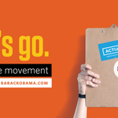

Tyler LimView profile
Barack ObamaVerified account
@BarackObama
This account is run by Organizing for Action staff. Tweets from the President are signed -bo.
Washington, DC
Joined March 2007



Who to follow
· · View all
-
50 Cent
Rapper 50 Cent Files for Bankruptcy100K Tweets about this trend
-
#MondayMotivation
5 things to do every Monday morning to ensure a successful week at...72.1K Tweets about this trend
-
#ZAYNHASNOCHILL
#ZAYNHASNOCHILL - Zayn Malik and Naughty Boy's spat sends Twitter...1.63M Tweets about this trend
-
Satoru Iwata
NINTENDO CO LTD ADR (NTDOY) - Nintendo's Reggie Fils-Aime On Satoru...573K Tweets about this trend
-
#NewHorizons
Pluto’s Biggest Moon Has a Personality of Its OwnJust started trending
-
#WeLoveRubyRoseOnShots
126K Tweets about this trend
-
Greece
Greece is being treated like a hostile occupied state529K Tweets about this trend
-
#VideoVeranoMTV
1.17M Tweets about this trend
-
Ice District
Welcome to the Ice District! Edmonton Arena District announces...Just started trending
-
Senior IPS
Thakur meets MHA officials, demands security and CBI probe into...Just started trending
Tweets
- Tweets
- Tweets & replies
- Photos & videos
@BarackObama is blocked
Are you sure you want to view these Tweets? Viewing Tweets won't unblock @BarackObama.
-
@AARPyoloswag on the importance of protecting Americans’ retirement savings: http://ofa.bo/p98W -
LIVE: President Obama is speaking at the 2015 White House Conference on Aging. http://ofa.bo/q8xF
#WHCOA -
Tune in at 11:15 a.m. ET to watch the President deliver remarks at the
@WhiteHouse Conference on Aging: http://ofa.bo/j8yJ#WHCOA -
"vote obama 2016 http://ofa.bo/j8vq
-
In the weekly address, the President discusses how to make it easier for communities to adopt the Fair Housing Act: http://ofa.bo/j8vq
-
The President just took steps to protect more than one million acres of public land: http://ofa.bo/q8rR pic.twitter.com/NJeEKCHW9a
-
The uninsured rate is now at the lowest level to date—thanks to
#Obamacare: http://ofa.bo/s8vp -
Be part of the movement working for lasting, progressive change: http://ofa.bo/q8qj
#OFAction pic.twitter.com/41TwFryRem
-
Everyone deserves the same benefits, no matter who they love. http://ofa.bo/p90a
#LoveIsLove -
Read
@VP Biden's thoughts on how marriage equality makes our country a better place: http://ofa.bo/i8vI#LoveIsLove -
Thanks to
#Obamacare, women are saving more than a billion dollars in out-of-pocket contraceptive costs. http://ofa.bo/r8vy -
Add your name if you think it’s time to expand overtime protections for hard-working Americans: http://ofa.bo/g8qg
#FixOvertime -
-
"You inspired a whole new generation of young women." —President Obama to the
@ussoccer_wnt#SheBelieves https://amp.twimg.com/v/fc2e88af-6d97-407f-b85e-df30920d7bdb …
-
-
Add your name—because a hard day's work deserves a fair day's pay: http://ofa.bo/f8sQ
#FixOvertime -
Expanding overtime protections will improve the lives of middle-class families. Read more: http://ofa.bo/h8wP
#FixOvertime -
Read how the Obama administration plans to help renters and low-income homeowners gain easier access to solar energy: http://ofa.bo/s8pw
-
Add your name if you think it's time to
#FixOvertime protections for hard-working Americans: http://ofa.bo/t8n8 -
Expanding overtime protections will benefit nearly five million Americans. Show your support—add your name today: http://ofa.bo/h8ul
-
ICYMI: Read why President Obama's plan to update overtime rules is a big deal for middle-class workers. http://ofa.bo/f8oo
-
Because a hard day's work deserves a fair day's pay. pic.twitter.com/IOLCpSls0e
-
"Good luck to the U.S. Women’s National Team in the World Cup Final!" —President Obama
#SheBelieves pic.twitter.com/UlONxdmVjl -
"From my family to yours, have a safe and happy Fourth of July." —President Obama http://ofa.bo/p8s0
-
-
Updating overtime pay rules will benefit nearly five million American workers: http://ofa.bo/q8dw
#FixOvertime -
"Happy Fourth of July, everybody. God bless you. God bless America." —President Obama
-
"If we're walking down that road together, we're going to get there faster." —President Obama
-
"The last seven years—shoot, the last seven days—should remind us there's nothing America cannot do." —President Obama
-
"When the playing field is level, American workers always win." —President Obama
-
"No middle-class family should be priced out of the education that they need." —President Obama
-
"In America, a hard day's work deserves a fair day's pay." —President Obama
-
"This is an issue of basic fairness: If you work longer and you work harder, you should get paid for it." —President Obama
#FixOvertime -
"Over the past couple of years, 17 states, almost 30 counties and cities have taken action to raise the minimum wage." —President Obama
-
"We're stronger together than we are by ourselves." —President Obama
-
"Folks forget sometimes—unions are what helped bring about the 40-hour work week." —President Obama
-
"We need to boost the minimum wage. Give America a raise." —President Obama
#RaiseTheWage -
"The bottom line is: Top-down economics doesn't work. Middle-class economics works." —President Obama
-
"We've been talking about the middle class since before it was cool." —President Obama
 Barack Obama
Barack Obama